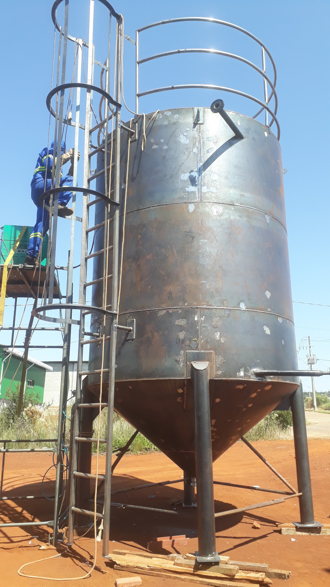
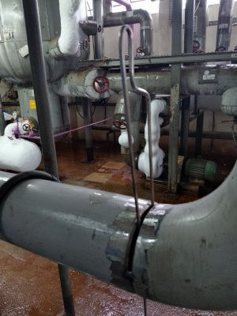

Foto
Diretrizes da Empresa
A BJK acredita que apenas frases ou palavras
não são capazes de garantir a segurança e a proteção dos nossos colaboradores e o ambiente ao qual prestamos nossos servios.
Somente um trabalho efetivo, com uma equipe
altamente qualificada, motivada e comprometida com ações seguras e com a
sustentabilidade é capaz de desenvolver resultados de sucesso, superando
desafios, respeitando a vida, a integridade física e mental dos seus
colaboradores e respeitando o meio ambiente.
Cultivamos uma cultura que prioriza a segurança e
promove o respeito ao ambiente em que atuamos. Nossos valores são firmes e
inegociáveis; a segurança das pessoas e a proteção ambiental são pilares
fundamentais de nossa atuação de modo que a BJK tem como prioridade a
adoção de práticas responsáveis e rigorosas que assegurem o atendimento de
todas as exigências legais e contratuais.
Áreas de atuação
A BJK é especializada no fornecimento de serviços e manutenção industrial. Seu polo industriais fica localizado na cidade de Chapecó /SC, tem desenvolvido atividades em todo território brasileiro atuando em parceria com empresas nacionais e multinacionais.
Fundada em 2020. Nossos serviços tem como executantes profissionais que já atuavam em grandes indústrias, a empresa rapidamente se tornou referência em serviços de alta qualidade e eficiência.
Politica de Qualidade
Cada projeto da BJK é cuidadosamente planejado
e executado com o objetivo de promover o uso eficiente dos recursos e a destinação
correta dos resíduos. Esse compromisso não apenas reforça a integridade da
empresa, mas também demonstra a sua responsabilidade social, garantindo que
suas operações contribuam positivamente para o desenvolvimento sustentável da
sociedade.
Promover a valorização humana e ambiental é garantir a nossa continuidade e garantir um futuro melhor para todos.
Qualidade Garantida Na Gestão e Execução
Compromisso com a qualidade faz parte da nossa cultura e fazemos questão de evidenciar isso através de nossas ações.

Temos ampla experiência em obras industriais para empresas de pequenas, médias e grandes portes. Consulte-nos e saiba como podemos contribuir para o crescimento do seu negócio. Atendemos todo Brasil. Temos ampla experiência em tubulações, bem como em montagem de equipamentos mecanicos industriais. Consulte-nos e saiba como podemos contribuir para o crescimento da sua Empresa.

Fazer paradas programadas para manutenção dos equipamentos são fundamentais para que uma indústria consiga se manter competitiva quanto a produtividade e custos operacionais.
No entanto, a gestão das paradas de manutenção é um dos maiores desafio mesmo para as empresas mais experientes. Com tudo, temos uma equipe qualificada de muitos anos de experiência, realizamos paradas programadas para reparos emergenciais.